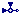
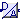
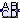
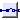
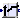
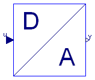
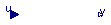
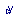
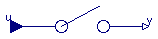

| Name | Description |
|---|---|
|  Add | |
| Add2 | |
| Polynomial approximation of the zeroth order modified Bessel function | |
| DiscreteADconverter | AD converter as discrete block |
|  DiscreteDAconverter | Digital to analog converter as discrete block (including zero order hold) |
| DiscreteFIR | Realization of FIR filter |
| Uniform distributed noise for discrete blocks | |
| Sample the input signal | |
|  DiscreteStateSpace | Discrete linear time invariant state space system block parameterized with a continuous state space system |
| DiscreteStateSpace2 | Discrete linear time invariant state space system block parameterized with a continuous state space system |
|  DiscreteUnitDelay | Delay the input signal by one sample instant |
|  DiscreteInterpolator | Increasing the sampling frequency with linear interpolation |
| Calculates the FIR-filter coefficient vector | |
| Calculation of n-point weighting window for FIR filter | |
| Pseudo random number generator | |
| Return scale factor for first order block | |
| Return scale factor for second order block |
| Type | Name | Description |
|---|---|---|
| input RealInput | u1 | |
| input RealInput | u2 | |
| output RealOutput | y |
model AddModelica.Blocks.Interfaces.RealInput u1; Modelica.Blocks.Interfaces.RealInput u2; Modelica.Blocks.Interfaces.RealOutput y; equation y = u1+u2;end Add;
| Type | Name | Default | Description |
|---|---|---|---|
| Boolean | fromLeft | true | true if second input is left (else below) |
| Integer | n | 1 | number of inputs = number of outputs |
| Type | Name | Description |
|---|---|---|
| input RealInput | u1[n] | |
| input RealInput | u2[n] | |
| output RealOutput | y[n] | |
| input RealInput | u2b[n] |
model Add2 parameter Boolean fromLeft = true "true if second input is left (else below)"; parameter Integer n(min=1)=1 "number of inputs = number of outputs";Modelica.Blocks.Interfaces.RealInput u1[n]; Modelica.Blocks.Interfaces.RealInput u2[n] if fromLeft; Modelica.Blocks.Interfaces.RealOutput y[n]; Modelica.Blocks.Interfaces.RealInput u2b[n] if not fromLeft; Add add[n]; equation //y = if fromLeft then u1+u2 else u1+u2b;connect(add.u2, u2b); connect(add.u2, u2); connect(add.u1, u1); connect(add.y, y); end Add2;
Polynomial approximation of the zeroth order modified Bessel function. The algorithm is taken from
The function is used to calculate the Kaiser-window via calcWindow.
Release Notes:
| Type | Name | Default | Description |
|---|---|---|---|
| Real | x |
| Type | Name | Description |
|---|---|---|
| Real | y |
function bessel0
"Polynomial approximation of the zeroth order modified Bessel function"
input Real x;
output Real y;
protected
Real ax;
Real a;
algorithm
ax := abs(x);
if ax < 3.75 then
a := (x/3.75)^2;
y := 1 + a*(3.5156229 + a*(3.0899424 + a*(1.2067492 + a*(0.2659732 + a*
(0.0360768 + a*0.0045813)))));
else
a := 3.75/ax;
y := exp(ax)/sqrt(ax)*(0.39894228 + a*(0.01328592 + a*(0.00225319 + a*(
-0.00157565 + a*(0.00916281 + a*(-0.02057706 + a*(0.02635537 + a*(-0.01647633
+ a*0.00392377))))))));
end if;
end bessel0;

Extends from Interfaces.PartialDiscreteSISO_equality (Common discrete part of blocks extending from PartialSISO_equality).
| Type | Name | Default | Description |
|---|---|---|---|
| Real | y_max | Upper limit of output signal | |
| Real | y_min | Lower limit of output signal | |
| Integer | bits | Number of bits (=0 means no quantization error) | |
| Integer | sampleFactor | 1 | Ts=sampleClock.sampleTime*sampleFactor |
| Type | Name | Description |
|---|---|---|
| input RealInput | u | Continuous or discrete input signal of block |
| output RealOutput | y | Continuous or discrete output signal of block |
block DiscreteADconverter "AD converter as discrete block"
parameter Real y_max "Upper limit of output signal";
parameter Real y_min "Lower limit of output signal";
parameter Integer bits(min=0)
"Number of bits (=0 means no quantization error)";
extends Interfaces.PartialDiscreteSISO_equality;
protected
parameter Real quantization=if bits > 0 then ((y_max - y_min)/2^bits) else 0;
Real y_bound "Bounded output";
discrete Real y_sampled "Sampled output";
equation
when {initial(), sampleTrigger} then
u_sampled = u;
y_bound = if u > y_max then y_max else if u < y_min then y_min else u;
y_sampled = if bits > 0 then quantization*floor(abs(y_bound/quantization) + 0.5)*(
if y_bound >= 0 then +1 else -1) else y_bound;
end when;
y = y_sampled;
end DiscreteADconverter;
 Modelica_LinearSystems2.Controller.Internal.DiscreteDAconverter
Modelica_LinearSystems2.Controller.Internal.DiscreteDAconverter
Extends from Interfaces.PartialDiscreteSISO_equality (Common discrete part of blocks extending from PartialSISO_equality).
| Type | Name | Default | Description |
|---|---|---|---|
| Real | y_max | Upper limit of output signal | |
| Real | y_min | Lower limit of output signal | |
| Integer | bits | Number of bits (=0 means no quantization error) | |
| Boolean | unitDelay | true | = true, if one sample period delay, = false, if computing time not modelled |
| Integer | sampleFactor | 1 | Ts=sampleClock.sampleTime*sampleFactor |
| Type | Name | Description |
|---|---|---|
| input RealInput | u | Continuous or discrete input signal of block |
| output RealOutput | y | Continuous or discrete output signal of block |
block DiscreteDAconverter
"Digital to analog converter as discrete block (including zero order hold)"
parameter Real y_max "Upper limit of output signal";
parameter Real y_min "Lower limit of output signal";
parameter Integer bits(min=0)
"Number of bits (=0 means no quantization error)";
parameter Boolean unitDelay = true
"= true, if one sample period delay, = false, if computing time not modelled";
extends Interfaces.PartialDiscreteSISO_equality;
protected
parameter Real quantization=if bits > 0 then ((y_max - y_min)/2^bits) else 0;
discrete Real y_bound "Bounded output";
discrete Real y_sampled "Sampled output";
discrete Real y_delaySampled
"Sampled output with a delay of one sample period";
equation
when {initial(),sampleTrigger} then
u_sampled = u;
y_bound = if u > y_max then y_max else if u < y_min then y_min else u;
y_sampled = if bits > 0 then quantization*floor(abs(y_bound/quantization) + 0.5)
*(if y_bound >= 0 then +1 else -1) else y_bound;
if unitDelay then
y_delaySampled = if initial() then y_sampled else pre(y_sampled);
else
y_delaySampled = y_sampled;
end if;
end when;
y = y_delaySampled;
end DiscreteDAconverter;

Extends from Interfaces.PartialDiscreteSISO_equality (Common discrete part of blocks extending from PartialSISO_equality).
| Type | Name | Default | Description |
|---|---|---|---|
| Integer | sampleFactor | 1 | Ts=sampleClock.sampleTime*sampleFactor |
| Real | a[:] | {1,1} | Coefficients of FIR filter |
| Type | Name | Description |
|---|---|---|
| input RealInput | u | Continuous or discrete input signal of block |
| output RealOutput | y | Continuous or discrete output signal of block |
block DiscreteFIR "Realization of FIR filter"
extends Interfaces.PartialDiscreteSISO_equality;
parameter Real a[:]={1,1} "Coefficients of FIR filter";
protected
parameter Integer n = size(a, 1) - 1;
discrete Real x[n];
discrete Real sum[n];
discrete Real y_sampled "Sampled output";
equation
when {initial(), sampleTrigger} then
u_sampled = u;
x[1] = pre(u);
sum[1] = a[2]*x[1];
x[2:n] = pre(x[1:n - 1]);
sum[2:n] = a[3:n + 1]*diagonal(x[2:n]) + sum[1:n - 1];
y_sampled = a[1]*u + sum[n];
end when;
y = y_sampled;
initial equation
u = pre(u);
x = pre(x);
sum = pre(sum);
end DiscreteFIR;

Extends from Interfaces.PartialBlockIcon (Basic graphical layout of discrete/continuous block).
| Type | Name | Default | Description |
|---|---|---|---|
| Real | y_min | Lower limit of noise band | |
| Real | y_max | Upper limit of noise band | |
| Integer | firstSeed[3] | {23,87,187} | Integer[3] defining random sequence; required element range: 0..255 |
| Integer | sampleFactor | 1 | Noise sample time = sampleClock.sampleTime*sampleFactor |
| Type | Name | Description |
|---|---|---|
| output RealOutput | y | Noise output signal in the range [y_min .. y_max] |
block DiscreteNoise "Uniform distributed noise for discrete blocks"
extends Interfaces.PartialBlockIcon;
parameter Real y_min "Lower limit of noise band";
parameter Real y_max "Upper limit of noise band";
parameter Integer firstSeed[3](each min=0, each max=255) = {23,87,187}
"Integer[3] defining random sequence; required element range: 0..255";
parameter Integer sampleFactor(min=1)=1
"Noise sample time = sampleClock.sampleTime*sampleFactor";
final parameter Modelica.SIunits.Time Ts = sampleClock.sampleTime*sampleFactor
"Sample time";
Modelica.Blocks.Interfaces.RealOutput y
"Noise output signal in the range [y_min .. y_max]";
protected
outer SampleClock sampleClock "Global options";
Integer ticks
"Actual number of base samples starting from the last sample time instant";
Integer seedState[3] "State of seed";
Boolean sampleTrigger "Triggers next sample time";
discrete Real noise "Noise in the range 0..1";
discrete Real y_sampled "Sampled output";
equation
if sampleClock.blockType == Types.BlockType.Continuous then
// no sampling in sampleClock
sampleTrigger = sample(Ts, Ts);
ticks = 0;
else
when sampleClock.sampleTrigger then
ticks = if pre(ticks) < sampleFactor then pre(ticks) + 1 else 1;
end when;
sampleTrigger = sampleClock.sampleTrigger and ticks >= sampleFactor;
end if;
when {initial(), sampleTrigger} then
(noise,seedState) = random(pre(seedState));
y_sampled = y_min + (y_max - y_min)*noise;
end when;
y = y_sampled;
initial equation
pre(ticks) = 0;
pre(seedState) = firstSeed;
end DiscreteNoise;
 Modelica_LinearSystems2.Controller.Internal.DiscreteSampler
Modelica_LinearSystems2.Controller.Internal.DiscreteSampler
Extends from Interfaces.PartialDiscreteSISO_equality (Common discrete part of blocks extending from PartialSISO_equality).
| Type | Name | Default | Description |
|---|---|---|---|
| Integer | sampleFactor | 1 | Ts=sampleClock.sampleTime*sampleFactor |
| Type | Name | Description |
|---|---|---|
| input RealInput | u | Continuous or discrete input signal of block |
| output RealOutput | y | Continuous or discrete output signal of block |
block DiscreteSampler "Sample the input signal"
extends Interfaces.PartialDiscreteSISO_equality;
equation
when {initial(), sampleTrigger} then
u_sampled = u;
end when;
y = u_sampled;
end DiscreteSampler;

Extends from Interfaces.PartialBlockIcon (Basic graphical layout of discrete/continuous block).
| Type | Name | Default | Description |
|---|---|---|---|
| StateSpace | system | Continuous linear time-invariant system | |
| MethodWithGlobalDefault | methodType | Modelica_LinearSystems2.Cont... | Type of discretization |
| Integer | sampleFactor | 1 | sample time=sampleClock.sampleTime*sampleFactor |
| Init | init | Types.InitWithGlobalDefault.... | Type of initialization (No init/InitialState/SteadyState/Output) |
| Real | x_start[nx] | zeros(nx) | Initial value of continuous state x, if init=InitialState (otherwise guess value) |
| Real | y_start[ny] | zeros(ny) | Initial value of continuous output y, if init=InitialOutput (otherwise guess value) |
| Boolean | withDelay | false | is true if a unit delay should be considered |
| Type | Name | Description |
|---|---|---|
| input RealInput | u[nu] | Continuous or discrete input signals of block |
| output RealOutput | y[ny] | Discrete output signals of block |
| output RealOutput | x[nx] | State vector of continuous system at sample times |
model DiscreteStateSpace
"Discrete linear time invariant state space system block parameterized with a continuous state space system"
import Modelica_LinearSystems2.Controller.Types;
import Modelica.Math.Matrices;
extends Interfaces.PartialBlockIcon;
parameter Modelica_LinearSystems2.StateSpace system(
A=fill(0, 0, 0),
B=fill(0, 0, 1),
C=fill(0, 1, 0),
D=fill(0, 1, 1), uNames={"u"},yNames={"y"})
"Continuous linear time-invariant system";
parameter Types.MethodWithGlobalDefault methodType=Modelica_LinearSystems2.Controller.Types.MethodWithGlobalDefault.UseSampleClockOption
"Type of discretization";
final parameter Types.Method method=if methodType == Types.MethodWithGlobalDefault.UseSampleClockOption then
sampleClock.methodType else methodType
"Discretization method (explicitEuler/implicitEuler/trapezoidal/stepExact/rampExact)";
parameter Integer sampleFactor(min=1) = 1
"sample time=sampleClock.sampleTime*sampleFactor";
parameter Types.Init init=Types.InitWithGlobalDefault.UseSampleClockOption
"Type of initialization (No init/InitialState/SteadyState/Output)";
parameter Real x_start[nx]=zeros(nx)
"Initial value of continuous state x, if init=InitialState (otherwise guess value)";
parameter Real y_start[ny]=zeros(ny)
"Initial value of continuous output y, if init=InitialOutput (otherwise guess value)";
parameter Boolean withDelay = false
"is true if a unit delay should be considered";
final parameter Modelica.SIunits.Time Ts=sampleClock.sampleTime*sampleFactor
"Sample time";
final parameter Integer nx=size(system.A, 1) "Number of states";
final parameter Integer nu=size(system.B, 2) "Number of inputs";
final parameter Integer ny=size(system.C, 1) "Number of outputs";
Modelica.Blocks.Interfaces.RealInput u[nu]
"Continuous or discrete input signals of block";
Modelica.Blocks.Interfaces.RealOutput y[ny](start=y_start)
"Discrete output signals of block";
Modelica.Blocks.Interfaces.RealOutput x[nx](start=x_start)
"State vector of continuous system at sample times";
protected
outer SampleClock sampleClock "Global options";
parameter Modelica_LinearSystems2.DiscreteStateSpace discreteSystem=
Modelica_LinearSystems2.DiscreteStateSpace(
system,
Ts,
method);
discrete Real xd[nx](start=x_start)
"State vector of discrete system (pre(xd) = x - B2*u)";
discrete Real new_xd[nx](start=x_start) "Next valued of xd";
// Derived quantities
discrete Real u_sampled[nu] "Sampled continuous input signal u";
discrete Real pre_u_sampled[nu] "Sampled continuous input signal u";
discrete Real y_sampled[ny] "Sampled continuous output";
discrete Real x_sampled[nx] "Sampled continuous state";
Integer ticks
"Actual number of base samples starting from the last sample time instant";
Boolean sampleTrigger "Triggers next sample time";
equation
if sampleClock.blockType == Types.BlockType.Continuous then
// no sampling in sampleClock
sampleTrigger = sample(Ts, Ts);
ticks = 0;
else
when sampleClock.sampleTrigger then
ticks = if pre(ticks) < sampleFactor then pre(ticks) + 1 else 1;
end when;
sampleTrigger = sampleClock.sampleTrigger and ticks >= sampleFactor;
end if;
when {initial(),sampleTrigger} then
u_sampled = u;
pre_u_sampled = pre(u_sampled);
if withDelay then
new_xd = discreteSystem.B*pre_u_sampled + discreteSystem.A*xd;
y_sampled = discreteSystem.C*xd + discreteSystem.D*pre_u_sampled;
x_sampled = xd + discreteSystem.B2*pre_u_sampled;
else
new_xd = discreteSystem.B*u_sampled + discreteSystem.A*xd;
y_sampled = discreteSystem.C*xd + discreteSystem.D*u_sampled;
x_sampled = xd + discreteSystem.B2*u_sampled;
end if;
xd = pre(new_xd);
end when;
y = y_sampled;
x = x_sampled;
initial equation
pre(ticks) = 0;
if init == Types.Init.InitialState then
x = x_start;
elseif init == Types.Init.SteadyState then
if Matrices.isEqual(
discreteSystem.A,
identity(nx),
100*Modelica.Constants.eps) then
// block contains an integrator and is only possible to initialize with steady states steady state when u==0
u = fill(0.0, nu);
xd[nu + 1:nx] = pre(x[nu + 1:nx]);
else
xd = discreteSystem.B*u_sampled + discreteSystem.A*xd;//new_xd;
end if;
elseif init == Types.Init.InitialOutput then
y=y_start;
xd[ny+1:nx]=[zeros(nx-ny,ny),identity(nx-ny)]*Modelica.Math.Matrices.solve(identity(nx)-discreteSystem.A,discreteSystem.B*u);
end if;
end DiscreteStateSpace;
Extends from Interfaces.PartialBlockIcon (Basic graphical layout of discrete/continuous block).
| Type | Name | Default | Description |
|---|---|---|---|
| Real | ABCD[:, :] | Continuous linear time-invariant system | |
| MethodWithGlobalDefault | methodType | Modelica_LinearSystems2.Cont... | Type of discretization |
| Integer | sampleFactor | 1 | sample time=sampleClock.sampleTime*sampleFactor |
| Init | init | Types.InitWithGlobalDefault.... | Type of initialization (No init/InitialState/SteadyState/Output) |
| Real | x_start[nx] | zeros(nx) | Initial value of continuous state x, if init=InitialState (otherwise guess value) |
| Real | y_start[ny] | zeros(ny) | Initial value of continuous output y, if init=InitialOutput (otherwise guess value) |
| Boolean | withDelay | false | = true, if a unit delay should be considered |
| Type | Name | Description |
|---|---|---|
| input RealInput | u[nu] | Continuous or discrete input signals of block |
| output RealOutput | y[ny] | Discrete output signals of block |
| output RealOutput | x[nx] | State vector of continuous system at sample times |
model DiscreteStateSpace2
"Discrete linear time invariant state space system block parameterized with a continuous state space system"
import Modelica_LinearSystems2.Controller.Types;
import Modelica.Math.Matrices;
extends Interfaces.PartialBlockIcon;
parameter Real ABCD[:,:] "Continuous linear time-invariant system";
protected
parameter Real A[:,:] = ABCD[1:end-1,1:end-1];
parameter Real B[:,:] = ABCD[1:end-1,end:end];
parameter Real C[:,:] = ABCD[end:end,1:end-1];
parameter Real D[:,:] = matrix(ABCD[end,end]);
public
final parameter Integer nx=size(A, 1) "Number of states";
final parameter Integer nu=size(B, 2) "Number of inputs";
final parameter Integer ny=size(C, 1) "Number of outputs";
parameter Types.MethodWithGlobalDefault methodType=Modelica_LinearSystems2.Controller.Types.MethodWithGlobalDefault.UseSampleClockOption
"Type of discretization";
final parameter Types.Method method=if methodType == Types.MethodWithGlobalDefault.UseSampleClockOption then
sampleClock.methodType else methodType
"Discretization method (explicitEuler/implicitEuler/trapezoidal/stepExact/rampExact)";
parameter Integer sampleFactor(min=1) = 1
"sample time=sampleClock.sampleTime*sampleFactor";
parameter Types.Init init=Types.InitWithGlobalDefault.UseSampleClockOption
"Type of initialization (No init/InitialState/SteadyState/Output)";
parameter Real x_start[nx]=zeros(nx)
"Initial value of continuous state x, if init=InitialState (otherwise guess value)";
parameter Real y_start[ny]=zeros(ny)
"Initial value of continuous output y, if init=InitialOutput (otherwise guess value)";
parameter Boolean withDelay = false
"= true, if a unit delay should be considered";
final parameter Modelica.SIunits.Time Ts=sampleClock.sampleTime*sampleFactor
"Sample time";
Modelica.Blocks.Interfaces.RealInput u[nu]
"Continuous or discrete input signals of block";
Modelica.Blocks.Interfaces.RealOutput y[ny](start=y_start)
"Discrete output signals of block";
Modelica.Blocks.Interfaces.RealOutput x[nx](start=x_start)
"State vector of continuous system at sample times";
protected
outer SampleClock sampleClock "Global options";
parameter Modelica_LinearSystems2.DiscreteStateSpace discreteSystem=
Modelica_LinearSystems2.DiscreteStateSpace(
A, B, C, D,
Ts,
method);
discrete Real xd[nx](start=x_start)
"State vector of discrete system (pre(xd) = x - B2*u)";
discrete Real new_xd[nx](start=x_start) "Next value of xd";
// Derived quantities
discrete Real u_sampled[nu] "Sampled continuous input signal u";
discrete Real pre_u_sampled[nu]
"Sampled continuous input signal u of previous sample interval";
discrete Real y_sampled[ny] "Sampled continuous output";
discrete Real x_sampled[nx] "Sampled continuous state";
Integer ticks
"Actual number of base samples starting from the last sample time instant";
Boolean sampleTrigger "Triggers next sample time";
equation
if sampleClock.blockType == Types.BlockType.Continuous then
// no sampling in sampleClock
sampleTrigger = sample(Ts, Ts);
ticks = 0;
else
when sampleClock.sampleTrigger then
ticks = if pre(ticks) < sampleFactor then pre(ticks) + 1 else 1;
end when;
sampleTrigger = sampleClock.sampleTrigger and ticks >= sampleFactor;
end if;
when {initial(),sampleTrigger} then
u_sampled = u;
pre_u_sampled = pre(u_sampled);
if withDelay then
new_xd = discreteSystem.B*pre_u_sampled + discreteSystem.A*xd;
y_sampled = discreteSystem.C*xd + discreteSystem.D*pre_u_sampled;
x_sampled = xd + discreteSystem.B2*pre_u_sampled;
else
new_xd = discreteSystem.B*u_sampled + discreteSystem.A*xd;
y_sampled = discreteSystem.C*xd + discreteSystem.D*u_sampled;
x_sampled = xd + discreteSystem.B2*u_sampled;
end if;
xd = pre(new_xd);
end when;
y = y_sampled;
x = x_sampled;
initial equation
pre(ticks) = 0;
pre(x) = x_start;
pre(u_sampled) = u_sampled;
if init == Types.Init.InitialState then
x = x_start;
elseif init == Types.Init.SteadyState then
if Matrices.isEqual(
discreteSystem.A,
identity(nx),
100*Modelica.Constants.eps) then
// block contains an integrator and is only possible to initialize with steady states steady state when u==0
u = fill(0.0, nu);
xd[nu + 1:nx] = pre(x[nu + 1:nx]);
else
xd = discreteSystem.B*u_sampled + discreteSystem.A*xd;//new_xd;
end if;
elseif init == Types.Init.InitialOutput then
y=y_start;
xd[ny+1:nx]=[zeros(nx-ny,ny),identity(nx-ny)]*Modelica.Math.Matrices.solve(identity(nx)-discreteSystem.A,discreteSystem.B*u);
end if;
end DiscreteStateSpace2;

Extends from Interfaces.PartialDiscreteSISO_equality (Common discrete part of blocks extending from PartialSISO_equality).
| Type | Name | Default | Description |
|---|---|---|---|
| Integer | sampleFactor | 1 | Ts=sampleClock.sampleTime*sampleFactor |
| Type | Name | Description |
|---|---|---|
| input RealInput | u | Continuous or discrete input signal of block |
| output RealOutput | y | Continuous or discrete output signal of block |
block DiscreteUnitDelay
"Delay the input signal by one sample instant"
extends Interfaces.PartialDiscreteSISO_equality;
protected
discrete Real y_sampled "Sampled output";
equation
when {initial(), sampleTrigger} then
u_sampled = u;
y_sampled = pre(u_sampled);
end when;
y = y_sampled;
end DiscreteUnitDelay;

Extends from Interfaces.PartialBlockIcon (Basic graphical layout of discrete/continuous block).
| Type | Name | Default | Description |
|---|---|---|---|
| Integer | inputSampleFactor | 1 | Input sample time = inputSampleFactor * sampleClock.sampleTime |
| Integer | outputSampleFactor | 1 | Output sample time = outputSampleFactor * sampleClock.sampleTime (inputSampleFactor must be an integer multiple of outputSampleFactor) |
| Type | Name | Description |
|---|---|---|
| input RealInput | u | Continuous or discrete input signal of block |
| output RealOutput | y | Continuous or discrete output signal of block |
block DiscreteInterpolator
"Increasing the sampling frequency with linear interpolation"
extends Interfaces.PartialBlockIcon;
parameter Integer inputSampleFactor(min=1)=1
"Input sample time = inputSampleFactor * sampleClock.sampleTime";
parameter Integer outputSampleFactor(min=1)=1
"Output sample time = outputSampleFactor * sampleClock.sampleTime";Modelica.Blocks.Interfaces.RealInput u "Continuous or discrete input signal of block"; Modelica.Blocks.Interfaces.RealOutput y "Continuous or discrete output signal of block"; protected Integer inputOutputSampleFactor = div(inputSampleFactor,outputSampleFactor); outer SampleClock sampleClock "Global options"; Boolean outputSampleTrigger "= true, if output sample time"; Integer outputTicks(start=0, fixed=true); Integer ticks(start=1, fixed=true); Real pre_u; Boolean sampleIn; equation assert(rem(inputSampleFactor,outputSampleFactor) == 0, "... Wrong parameters provided to model Modelica_LinearSystems2.Controller.Interpolator\n" + "inputSampleFactor (= " + String(inputSampleFactor) + ") must be an integer multiple of outputSampleFactor (= " + String(outputSampleFactor) + "),\nbut this is not the case"); when sampleClock.sampleTrigger then outputTicks = if pre(outputTicks) < outputSampleFactor then pre(outputTicks) + 1 else 1; end when; outputSampleTrigger = sampleClock.sampleTrigger and outputTicks >= outputSampleFactor; when outputSampleTrigger then ticks = if pre(ticks) < inputOutputSampleFactor then pre(ticks) + 1 else 1; sampleIn = ticks == 1; y = if ticks == 1 then (u - pre(u))/inputOutputSampleFactor + pre(u) else pre(pre_u) + ticks/inputOutputSampleFactor*(pre(u) - pre(pre_u)); end when; when {initial(), sampleIn} then pre_u = pre(u); end when; initial equation u = pre(u); pre_u = pre(pre_u); u = y;end DiscreteInterpolator;
The FIR-filter synthesis based on the window method. The coefficients are calculated through a fourier series approximation of the desired amplitude characteristic. Due to the fact that the Fourier series is truncated, there will be discontinuities in the magnitude of the filter. Especial at the edge of the filter the ripple is concentrated (Gibbs-effect). To counteract this, the filter coefficients are convolved in the frequency domain with the spectrum of a window function, thus smoothing the edge transitions at any discontinuity. This convolution in the frequency domain is equivalent to multiplying the filter coefficients with the window coefficients in the time domain.
The filter equation
y(k) = a0*u(k) + a1*u(k-1) + a2*u(k-2) + ... + an*u(k-n)
implies that the function outputs n+1 coefficients for a n-th order filter. The
coefficients can be weightened with different kind of windows: Rectangle, Bartlett,
Hann, Hamming, Blackman, Kaiser
| Type | Name | Default | Description |
|---|---|---|---|
| FIRspec | specType | Modelica_LinearSystems2.Cont... | Specification type of FIR filter |
| Integer | L | 2 | Length of mean value filter |
| FilterType | filterType | Modelica_LinearSystems2.Type... | Type of filter |
| Integer | order | 2 | Order of filter |
| Frequency | f_cut | 1 | Cut-off frequency [Hz] |
| Time | Ts | Sampling time [s] | |
| Window | window | Modelica_LinearSystems2.Cont... | Type of window |
| Real | beta | 2.12 | Beta-Parameter for Kaiser-window |
| Real | a_desired[:] | {1,1} | FIR filter coefficients |
| Type | Name | Description |
|---|---|---|
| Real | a[if specType == FIRspec.MeanValue then L else (if specType == FIRspec.Window then if mod(order, 2) > 0 and filterType == FilterType.HighPass then order + 2 else order + 1 else size(a_desired, 1))] | Filter coefficients |
function FIR_coefficients
"Calculates the FIR-filter coefficient vector"
import Modelica_LinearSystems2.Types.FilterType;
import Modelica_LinearSystems2.Controller.Types.FIRspec;
input FIRspec specType=Modelica_LinearSystems2.Controller.Types.FIRspec.MeanValue
"Specification type of FIR filter";
input Integer L(min=2) = 2 "Length of mean value filter";
input Modelica_LinearSystems2.Types.FilterType filterType=
Modelica_LinearSystems2.Types.FilterType.LowPass "Type of filter";
input Integer order(min=1) = 2 "Order of filter";
input Modelica.SIunits.Frequency f_cut=1 "Cut-off frequency";
input Modelica.SIunits.Time Ts(min=0) "Sampling time";
input Types.Window window=Modelica_LinearSystems2.Controller.Types.Window.Rectangle
"Type of window";
input Real beta=2.12 "Beta-Parameter for Kaiser-window";
input Real a_desired[:]={1,1} "FIR filter coefficients";
output Real a[if specType==FIRspec.MeanValue then L else
(if specType == FIRspec.Window then if mod(order,2)>0 and filterType == FilterType.HighPass then order+2 else order+1 else
size(a_desired,1))] "Filter coefficients";
protected
constant Real pi=Modelica.Constants.pi;
Boolean isEven=mod(order,2)==0;
Integer order2 = if not isEven and filterType == FilterType.HighPass then order+1 else order;
Real Wc=2*pi*f_cut*Ts;
Integer i;
Real w[order2 + 1];
Real k;
algorithm
assert(f_cut<=1/(2*Ts),"The cut-off frequency f_cut may not be greater than half the sample frequency (Nyquist frequency), i.e. f_cut <= " + String(1/(2*Ts)) + " but is "+String(f_cut));
if specType == FIRspec.MeanValue then
a := fill(1/L, L);
elseif specType == FIRspec.Window then
w := Internal.FIR_window(order2 + 1, window, beta);
for i in 1:order2 + 1 loop
k := i - 1 - order2/2;
if i - 1 == order2/2 then
a[i] := if filterType == FilterType.LowPass then Wc*w[i]/pi else
w[i] - Wc*w[i]/pi;
else
a[i] := if filterType == FilterType.LowPass then sin(k*Wc)*
w[i]/(k*pi) else w[i]*(sin(k*pi) - sin(k*Wc))/(k*pi);
end if;
end for;
else
a := a_desired;
end if;
if not isEven and filterType == FilterType.HighPass then
Modelica.Utilities.Streams.print("The requested order of the FIR filter in FIR_coefficients is odd and has been increased by one to get an even order filter\n");
end if;
end FIR_coefficients;
Weighting windows are used for digital filter design or spectrum estimation (e.g. DFT) to increase the quality. In designing FIR-Filter the main role of windowing is to remove non-ideal effects caused by the endless number of filter coefficients (Gibbs phenomenon). Multiplying the coefficients with a window damps the coefficients at the beginning and at the end.
The function outputs a L-point vector for a given kind of window. The parameter "beta" is only needed by the Kaiser window. The types of windows are:
| Type | Name | Default | Description |
|---|---|---|---|
| Integer | L | Number of Points | |
| Window | window | Type of window | |
| Real | beta | 2.12 | Beta-Parameter for Kaiser-window |
| Type | Name | Description |
|---|---|---|
| Real | a[L] | output vector |
function FIR_window
"Calculation of n-point weighting window for FIR filter"
import Modelica_LinearSystems2.Controller.Types.Window;
input Integer L "Number of Points";
input Window window "Type of window";
input Real beta=2.12 "Beta-Parameter for Kaiser-window";
output Real a[L] "output vector";
protected
Integer i=0;
constant Real pi=Modelica.Constants.pi;
Real k;
algorithm
if window <> Window.Rectangle then
for i in 1:L loop
k := i - 1 - (L - 1)/2;
if window == Window.Bartlett then
a[i] := 1 - 2*abs(k)/(L - 1);
elseif window == Window.Hann then
a[i] := 0.5 + 0.5*cos(2*pi*k/(L - 1));
elseif window == Window.Hamming then
a[i] := 0.54 + 0.46*cos(2*pi*k/(L - 1));
elseif window == Window.Blackman then
a[i] := 0.42 + 0.5*cos(2*pi*k/(L - 1)) + 0.08*cos(4*pi*k/(L - 1));
elseif window == Window.Kaiser then
k := 2*beta*sqrt((i - 1)*(L - i))/(L - 1);
a[i] := Internal.bessel0(k)/ Internal.bessel0(beta);
else
Modelica.Utilities.Streams.error("window = " + String(window) + " not known");
end if;
end for;
else
a := ones(L);
end if;
end FIR_window;
Random generates a sequence of uniform distributed pseudo-random numbers. The algorithm is a variant of the multiplicative congruential algorithm, known as the Wichmann-Hill generator:
x(k) = (a1*x(k-1)) mod m1
y(k) = (a2*y(k-1)) mod m2
z(k) = (a3*z(k-1)) mod m3
U(k) = (x(k)/m1 + y(k)/m2 + z(k)/m3) mod 1
This generates pseudo-random numbers U(k) uniformly distributed
in the interval (0,1). There are many forms of generators depending
on the parameters m (prime numbers) and a. The sequence needs an
initial Integer vector {x,y,z} known as the seed. The use of the same
seed will lead to the same sequence of numbers.
Remarks
Random number generators (RNG) are pseudo-functions which are not true functions but algorithms which deliver a fixed sequence of (usually Integer) numbers which should have a very large period before they repeat itself and appropriate statistic properties such that the sequence appears to be a random draw. For real-valued random numbers, the integers are scaled to the real interval 0.0-1.0. They result in a uniformly distributed random variate between 0-1, which has to be tranformed to give a random variate of a wanted distribution. There are two types of techniques for transforming random variates:
Acceptance-Rejection techniques throw away some of the generated variates and are thus less efficient. They can not be avoided for all distributions. A good summary about random number generation and most of the transformation techniques used below is given in:
Discrete Event SimulationSome of the other references are quoted below.
WICHMANN-HILL RANDOM NUMBER GENERATOR
Wichmann, B. A. & Hill, I. D. (1982)
Algorithm AS 183:
An efficient and portable pseudo-random number generator
Applied Statistics 31 (1982) 188-190
see also:
Correction to Algorithm AS 183
Applied Statistics 33 (1984) 123
McLeod, A. I. (1985)
A remark on Algorithm AS 183
Applied Statistics 34 (1985),198-200
In order to completely avoid external functions, all seeds are
set via parameters. For simulation purposes this is almost
always the desired behaviour.
Translated by Hubertus Tummescheit from Python source provided by
Guido van Rossum translated from C source by Adrian Baddeley.
http://www.python.org/doc/current/lib/module-random.html
R A N D O M V A R I A B L E G E N E R A T O R S
distributions on the real line:
------------------------------
normal (Gaussian) 2 versions
Copyright © Hubertus Tummescheit and Department of Automatic Control, Lund University, Sweden.
This Modelica function is free software; it can be redistributed and/or modified under the terms of the Modelica license, see the license conditions and the accompanying disclaimer here.
| Type | Name | Default | Description |
|---|---|---|---|
| Integer | seedIn[3] | Integer vector defining random number sequence, e.g., {23,87,187} |
| Type | Name | Description |
|---|---|---|
| Real | x | Random number between 0 and 1 |
| Integer | seedOut[3] | Modified seed to be used for next call of random() |
function random "Pseudo random number generator"input Integer seedIn[3] "Integer vector defining random number sequence, e.g., {23,87,187}"; output Real x "Random number between 0 and 1";output Integer seedOut[3] "Modified seed to be used for next call of random()"; algorithm seedOut[1] := rem((171*seedIn[1]), 30269); seedOut[2] := rem((172*seedIn[2]), 30307); seedOut[3] := rem((170*seedIn[3]), 30323); // zero is a poor seed, therfore substitute 1; if seedOut[1] == 0 then seedOut[1] := 1; end if; if seedOut[2] == 0 then seedOut[2] := 1; end if; if seedOut[3] == 0 then seedOut[3] := 1; end if; x := rem((seedOut[1]/30269.0 + seedOut[2]/30307.0 + seedOut[3]/30323.0), 1.0);end random;
| Type | Name | Default | Description |
|---|---|---|---|
| Real | n | (s+n)/(s+d) | |
| Real | d | (s+n)/(s+d) | |
| Real | small | 100*Modelica.Constants.eps |
| Type | Name | Description |
|---|---|---|
| Real | k | = d/n, if d,n are not zero, otherwise special cases |
function scaleFactor1 "Return scale factor for first order block"
input Real n "(s+n)/(s+d)";
input Real d "(s+n)/(s+d)";
input Real small=100*Modelica.Constants.eps;
output Real k "= d/n, if d,n are not zero, otherwise special cases";
algorithm
k :=(if abs(d) > small then abs(d) else 1)/(if abs(n) > small then abs(n) else
1);
end scaleFactor1;
| Type | Name | Default | Description |
|---|---|---|---|
| Real | n1 | (s^2 + n1*s + n2)/(s^2 + d1*s + d2) | |
| Real | n2 | (s^2 + n1*s + n2)/(s^2 + d1*s + d2) | |
| Real | d1 | (s^2 + n1*s + n2)/(s^2 + d1*s + d2) | |
| Real | d2 | (s^2 + n1*s + n2)/(s^2 + d1*s + d2) | |
| Real | small | 100*Modelica.Constants.eps |
| Type | Name | Description |
|---|---|---|
| Real | k | = d2/n2, if d2,n2 are not zero, otherwise special cases |
function scaleFactor2 "Return scale factor for second order block"
input Real n1 "(s^2 + n1*s + n2)/(s^2 + d1*s + d2)";
input Real n2 "(s^2 + n1*s + n2)/(s^2 + d1*s + d2)";
input Real d1 "(s^2 + n1*s + n2)/(s^2 + d1*s + d2)";
input Real d2 "(s^2 + n1*s + n2)/(s^2 + d1*s + d2)";
input Real small=100*Modelica.Constants.eps;
output Real k "= d2/n2, if d2,n2 are not zero, otherwise special cases";
algorithm
k :=(if abs(d2) > small then abs(d2) else (if abs(d1) > small then abs(d1) else 1)) /
(if abs(n2) > small then abs(n2) else (if abs(n1) > small then abs(n1) else 1));
end scaleFactor2;